Technical System Overview
The voxel generator exists in two parallel implementations.
Cubic
The Cubic Version uses fixed 1×1×1 blocks and integer math for maximum speed.
Dimension-Agnostic
The Dimension-Agnostic Version introduces per-axis block scaling, letting voxels stretch or compress along X, Y, and Z to represent non-uniform shapes.
The latter is slightly slower but more flexible, ideal for model voxelization and mixed-resolution structures. Both share the same chunked data model and mesh pipeline.
Key Achievements
- Built complete voxel pipeline from mesh import to optimized rendering
- Implemented two interchangeable voxel systems: cubic and dimension-agnostic
- Created 3D flood-fill system for solid model generation
- Developed Conway's Game of Life in 2D/3D with custom rule sets
- Engineered chunk-based system supporting large-scale environments
Technical Highlights
- Intelligent Mesh Generation: Separate collision/visual meshes with UV caching for performance
- Model Voxelization: Physics-based conversion of any 3D model with solid/hollow options
- Procedural Systems: Multiple generation methods (noise, Game of Life, heightmaps)
- Flexible Geometry: Dimension-agnostic support for non-cubic voxel scaling
- Asset Pipeline: Prefab export system for reusing generated structures
Notable Features
- Support for 2D/3D boolean, integer, and float arrays as input
- Real-time visualization of evolving Game of Life simulations
- Variable block dimensions (non-cubic voxels)
- Optimized neighbor checking and face culling
- Editor tools for designers to create voxel structures visually
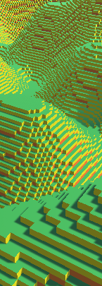
System Structure
ChunkData
The ChunkData class defines the core data structure for each voxel chunk.
Each chunk stores an array of BlockType values representing a 3D grid of voxels, along with information about its dimensions and position in the world.
In the Cubic Version, chunks are defined by a single horizontal size (chunkSize) and a fixed vertical size (chunkHeight). Every voxel is assumed to be 1×1×1 in world units.
The Dimension-Agnostic Version generalizes this concept by introducing two new properties:
- Vector3Int chunkSize – defines how many voxels exist along each axis.
- Vector3 blockSize – defines the real-world size of each voxel on the X, Y, and Z axes.
This allows non-uniform voxel scaling, enabling flattened, elongated, or otherwise stretched blocks.
The world generator uses these parameters to position and stack chunks precisely in 3D space, making full volumetric landscapes possible rather than heightmap-like surfaces.
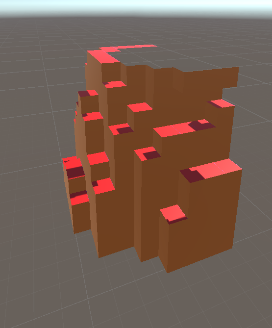
MeshData
The MeshData class stores all mesh information for a chunk, including vertex, triangle, and UV data.
It also keeps a separate set of vertex and triangle lists for collision meshes.
This structure provides a foundation for future expansion into multi-material or transparent block systems (such as water or glass) that may not require colliders.
Both the cubic and dimension-agnostic versions are the same
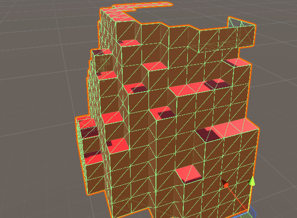
ChunkRenderer
ChunkRenderer is responsible for turning the generated MeshData into a visible Unity mesh.
It manages the MeshFilter, MeshRenderer, and MeshCollider components and handles both visual and physical geometry.
During rendering, the class clears any existing data, assigns new vertex and triangle arrays, recalculates normals, and rebuilds the collider mesh. An optional editor-only gizmo system visualizes chunk boundaries for debugging and scene layout.
In the Cubic Version, the gizmo always draws a cube with integer dimensions matching chunkSize and chunkHeight.
In the Dimension-Agnostic Version, gizmos use both chunkSize and blockSize, accurately representing non-cubic chunks and maintaining visual parity with their real-world scale.
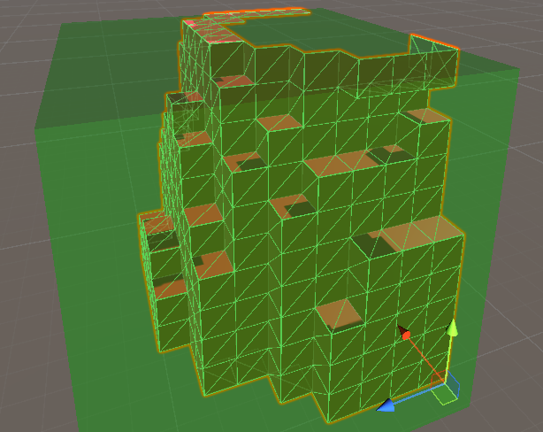
Chunk
The Chunk class manages all navigation and data access within the voxel world.
It provides methods to locate and modify specific voxels, determine whether a coordinate lies within a chunk’s boundaries, and perform operations across all voxels using an externally supplied action.
The LoopThroughTheBlocks() method is central to this system.
It iterates through every element of the chunk’s one-dimensional blocks array and uses GetPositionFromIndex() to convert the linear index into 3D coordinates before executing the provided action. This coordinate conversion ensures that each voxel in the 3D grid is accessed in order without requiring nested loops.
In the Cubic Version, this conversion and range checking are handled using simple integer dimensions: a single chunkSize for the X and Z axes and a fixed chunkHeight for Y.
The Dimension-Agnostic Version replaces these with a Vector3Int chunkSize, allowing each axis to have an independent resolution. Boundary checks and indexing logic were updated accordingly, making the chunk iteration and data access fully adaptable to different voxel aspect ratios.
When voxel lookups exceed the current chunk’s boundaries, the class defers to the world’s reference, fetching data from adjacent chunks.
This system creates a seamless, continuous voxel space across the entire world without overlaps or duplication.
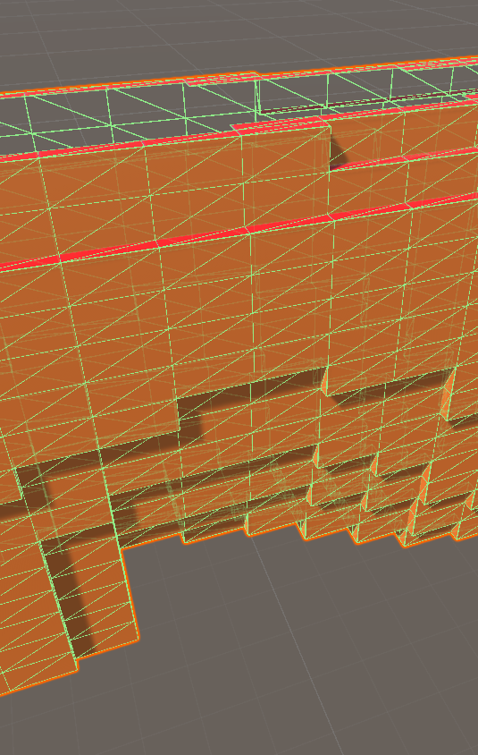
BlockType
BlockType is a simple enumeration used to define voxel categories within the world:
Nothingrepresents areas outside world bounds.Airindicates empty space.Wallrefers to filled voxels below the surface.Grounddesignates the uppermost, visible voxels.
The minimal structure helps distinguish visible from hidden blocks, allowing the mesh generation process to skip non-visible geometry and optimize rendering.
BlockData
Texture mapping for each voxel type is managed by the BlockDataSO ScriptableObject. It assigns texture coordinates based on both block type and face orientation, using TextureData entries that store separate values for the top (up) and sides of each voxel.
In this implementation, only the upper has a unique texture and all other directions are grouped together under sides. However, the design supports expansion to unique textures for all six directions if needed.
At runtime, a BlockDataManager script loads this data into a static dictionary, ensuring that every block type has fast, direct access to the correct texture information during mesh generation and rendering.
BlockHelper
The BlockHelper class generates the visible geometry for each voxel, determining which faces should be rendered, assigning their textures, and constructing the corresponding mesh data. Its main task is to evaluate each voxel’s neighbors, skipping those that are fully surrounded, and building only the faces that remain visible.
The process starts in GetMeshData(), which checks the current block’s type and inspects all six neighboring directions. If a block’s neighbor is empty or outside the world, the corresponding face is added to the mesh via GetFaceDataIn(). This ensures that interior voxels never contribute unnecessary geometry.
Each visible face is generated in GetFaceVertices(), which positions four corner vertices and passes them to the MeshData structure.
In the Cubic Version, vertex positions are hardcoded using ±0.5 offsets along each axis, producing perfectly cubic blocks.
In the Dimension-Agnostic Version, the same logic dynamically scales according to the block’s actual dimensions, stored in ChunkData.blockSize.
This allows non-uniform voxels—flattened, stretched, or rectangular blocks—to be rendered with correct proportions, without altering the rest of the rendering pipeline.
Texture mapping is handled by the FaceUVs() method. Each face’s UVs are derived from texture positions defined in the BlockDataManager, referencing coordinates in a shared texture atlas. To improve performance, a UV caching system stores computed UV arrays in a dictionary keyed by their texture position. Once a UV layout has been generated, it is reused for all identical faces across subsequent chunks. This optimization eliminates redundant calculations and noticeably speeds up mesh generation in large or frequently regenerated worlds.
Together, these improvements make the voxel renderer both dimension-flexible and computationally efficient, capable of generating diverse block geometries at scale.
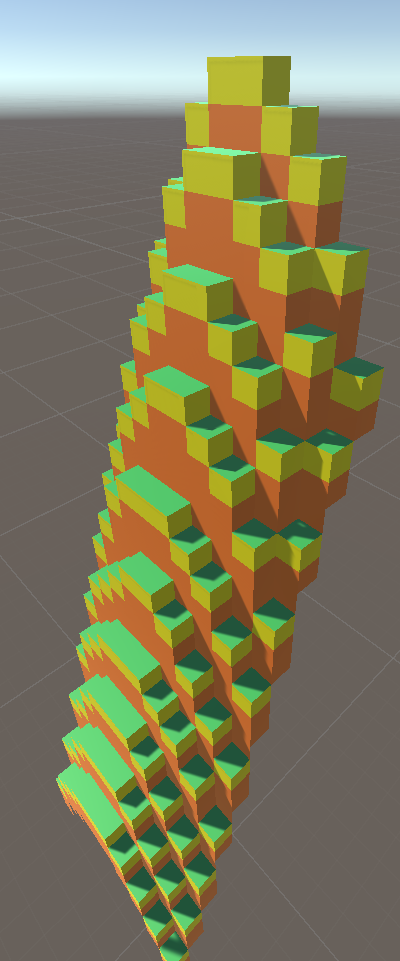
World
The World class serves as the central system responsible for building and organizing voxel environments. It coordinates how chunks are created, filled with voxel data, and ultimately rendered. While originally designed for Perlin noise–based terrain generation, the class has evolved into a flexible tool capable of constructing voxel structures from both procedural and pre-defined data.
Standard Generation
In its standard form, the World class creates a procedurally generated landscape using Perlin noise. The generation process is built around two key methods: GenerateWorld and GenerateVoxels, with RenderChunk handling the final mesh assembly. The system was later expanded to support custom input arrays, but its foundation lies here.
GenerateWorld
The GenerateWorld method serves as the entry point for voxel world creation. It begins by calling ClearWorld, which removes existing chunks and resets the lookup dictionaries.
Afterward, the method iterates through the world grid, creating and populating each chunk before rendering it.
In the Cubic Version, iteration occurs across the X and Z axes, while height is implicitly managed within each chunk. This produces a two-dimensional array of surface-aligned chunks, suitable for heightmap-style terrain.
Each ChunkData instance is placed at (x * chunkSize, 0, z * chunkSize) and filled via GenerateVoxels, which applies Perlin noise to determine surface height and material type (Air, Ground, or Wall).
Once all chunks are processed, the method loops through the collection to render them sequentially, ensuring synchronization between generated data and mesh output.
In the Dimension-Agnostic Version, the structure extends into full 3D space. The method now iterates across the X, Y, and Z axes, creating a complete volumetric grid of chunks.
Each chunk’s position is defined as x * chunkSize.x, y * chunkSize.y, z * chunkSize.z, enabling stacked vertical layers and multi-level environments.
This allows the generator to build complex formations such as caves, floating islands, and enclosed volumes—features not possible in the earlier 2D layout.
The rendering stage also scales each chunk’s position by blockSize to preserve accurate spacing when non-uniform voxel dimensions are used. Together, these improvements transform the generator from a terrain-focused system into a true volumetric voxel framework.
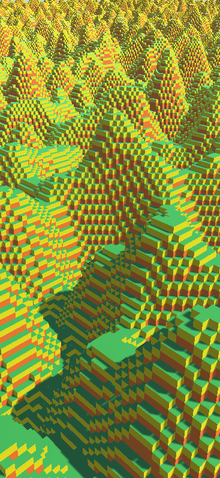
GenerateVoxels
The GenerateVoxels method defines the internal structure of each chunk by determining which voxels should be filled and which should remain empty. It is responsible for translating Perlin noise into material distributions inside each chunk, with the noiseScale parameter controlling how stretched or compressed the resulting terrain patterns appear. Smaller values of noiseScale create wide, gradual terrain formations, while larger values produce sharper, more rapidly changing features.
In the Cubic Version, the method loops through all X–Z coordinates in the chunk, using Perlin noise to determine a ground height value between 0 and chunkHeight.
For each column:
- Voxels above the ground level become Air,
- The topmost voxel is set to Ground,
- Voxels below become Wall.
Because height is uniform across all chunks, the noise function uses worldPosition.x + x, worldPosition.z + z to ensure seamless transitions between neighboring chunks.
This produces continuous, terrain-like landscapes with minimal visible seams.
In the Dimension-Agnostic Version, GenerateVoxels adapts to per-axis chunk and block dimensions. The total world height is calculated as chunkSize.y × mapSizeInChunks.y, ensuring vertical noise variation spans the entire world rather than a single chunk.
Each voxel’s global Y coordinate is derived from its chunk offset, meaning that higher chunks sample noise across the same X–Z pattern but compare it against their true Y range.
The voxel material logic remains identical—Air above, Ground at surface level, Wall below—maintaining consistency while expanding the generator into a three-dimensional domain.
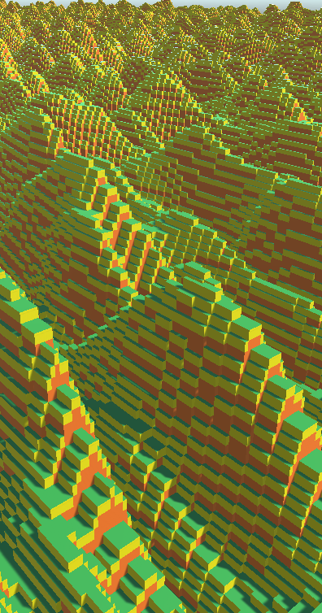
Generation from Premade Data
To allow for more specialized world layouts, the World class includes additional GenerateWorld overloads that build voxel environments directly from existing data.
Supported formats include 2D/3D boolean arrays, 2D float arrays, and 2D integer arrays, allowing for simple solid maps, heightmaps, and discrete elevation fields.
The overall process remains consistent across all input types: clear the world, calculate required chunks, extract the relevant data section using ExtractChunkArray, generate voxels, and render the results.
This makes it possible to import external voxel datasets or combine pre-generated structures with procedural content using the same generation pipeline.
GenerateWorld (Overloads)
Each overload begins by calling ClearWorld, removing existing chunks and resetting lookup tables. The method then calculates how many chunks are needed along each axis based on the size of the input array and the configured chunk dimensions.
In the Cubic Version, iteration occurs over the X–Z plane, creating chunks positioned at x * chunkSize, 0, z * chunkSize. Height remains defined within the chunk itself, making this layout ideal for 2D maps or top-down height-based terrain.
The Dimension-Agnostic Version generalizes the same logic across all three axes, calculating chunk positions as x * chunkSize.x, y * chunkSize.y, z * chunkSize.z.
This enables the world to be fully volumetric, with multiple stacked layers or enclosed spaces defined directly from 3D datasets.
Additionally, blockSize ensures each chunk’s placement scales accurately in world space, maintaining consistent voxel alignment even with non-uniform voxel dimensions.
Once all chunks are populated, both versions render them sequentially, guaranteeing synchronization between the data structure and mesh representation.
ExtractChunkArray
ExtractChunkArray isolates the section of input data corresponding to a specific chunk. It takes the full array, the indices of the current chunk, and the array’s total dimensions. From these, it computes the starting coordinates and copies the relevant values into a smaller, chunk-sized array.
If a chunk extends beyond the source array bounds—common near edges or with uneven world dimensions—missing cells are filled with defaults (false for boolean arrays, 0 for numerical types). This ensures consistent chunk sizes and prevents errors during voxel generation.
In the Cubic Version, extraction operates in two dimensions (X–Z) or 3D for pre-voxelized data.
The Dimension-Agnostic Version extends this to all three axes uniformly, allowing full volumetric data segmentation with no format-specific handling.
GenerateVoxels (Overloads)
Each GenerateVoxels overload interprets the extracted array and assigns voxel types accordingly:
- 2D Boolean arrays: true = Wall, false = Air.
- 3D Boolean arrays: Extend this logic to volumetric solids.
- Float arrays: Represent normalized heightmaps; voxel type is determined by comparing the Y position to the height value.
- Integer arrays: Represent discrete height levels, producing layered or stepped structures.
In the Cubic Version, voxel placement is handled within each chunk’s local Y range, suitable for surface-based terrain.
In the Dimension-Agnostic Version, Y offsets are computed globally, ensuring heightmaps and volume data align correctly across stacked chunks.
All variants rely on Chunk.SetBlock for voxel assignment, maintaining compatibility with the same mesh generation pipeline used for procedural terrain.
RenderChunk
After voxel data has been generated—whether through Standard Generation or Premade Data—the RenderChunk method converts it into a visible mesh.
It instantiates a chunk prefab at its calculated world-space position, then retrieves the ChunkRenderer component, initializes it with the corresponding ChunkData, and builds the mesh via Chunk.GetChunkMeshData. Once complete, the mesh is passed to ChunkRenderer.RenderMesh, producing the final rendered geometry.
In the Cubic Version, chunk placement uses raw world coordinates.
The Dimension-Agnostic Version multiplies chunk positions by blockSize before instantiation, ensuring proper scaling and alignment when voxel dimensions differ along each axis.
Since all generation methods—procedural or data-driven—feed into the same rendering pipeline, the system remains unified and consistent, allowing seamless transitions between different world construction approaches.
Model Conversion
In addition to procedural generation, a series of tools were developed to convert existing geometry into voxel data compatible with the World system. These tools serve as a bridge between traditional level design and voxel-based rendering, enabling designer-built scenes or imported meshes to be transformed into efficient, chunk-based voxel structures.
2D Array Conversion — LabyrinthReader
The LabyrinthReader is the first implementation of this concept, designed to convert manually placed cubes in the Unity editor into a 2D boolean array. It was originally used for maze-like environments, where designers could freely place uniform cubes to define walkable or solid regions.
When executed, the script gathers all child transforms under its parent to determine the spatial boundaries of the constructed layout.
By using the scale of a single cube as a reference, it calculates the minimum and maximum X and Z coordinates, defining the overall bounds of the array. This ensures the conversion works correctly regardless of where the layout is positioned in world space.
The GenerateCubePosition2DArray() method then iterates through each cube’s position, converting it into array indices based on its relative offset from the minimum bounds and the cube’s scale.
Each occupied cell is marked as true, producing a compact boolean grid representing the model’s footprint.
Once complete, this array is passed directly to World.GenerateWorld(bool[,]), which processes it into voxel chunks for optimized rendering.
The LabyrinthReader provides an intuitive workflow for designing 2D structures visually while ensuring they can be converted into clean, performance-efficient voxel data.
It also served as the foundation for later, fully 3D voxelization systems capable of converting complex meshes into volumetric voxel data.
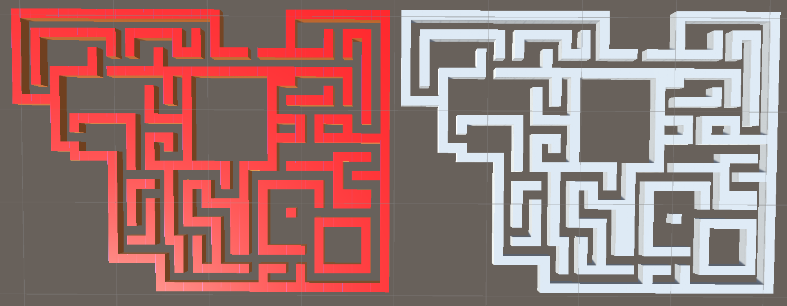
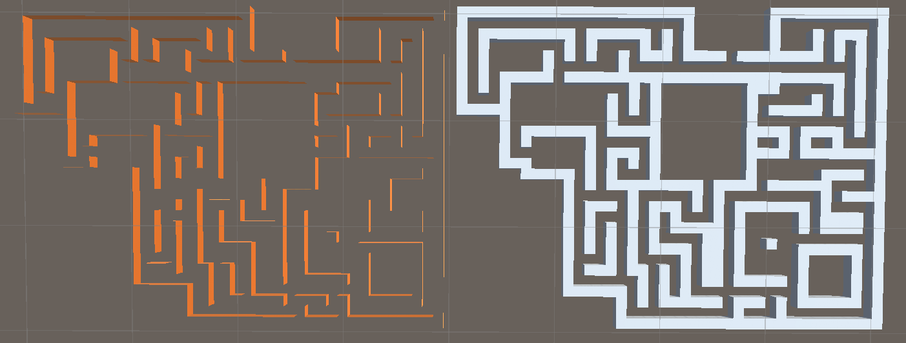
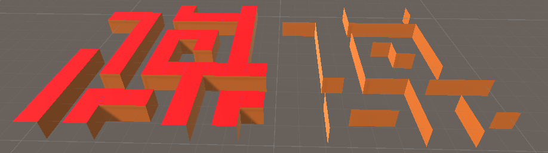
3D Array Conversion — Voxelizer
The Voxelizer script converts any 3D model into a voxel-based representation compatible with the World system. It analyzes the model’s geometry and translates its occupied volume into a 3D boolean array, where each element defines whether a voxel is solid or empty.
This enables traditional meshes to be transformed into fully interactive voxel environments suitable for architectural, decorative, or gameplay use.
Start
The conversion begins in the Start() method. When a valid target object is assigned, the script instantiates a temporary copy of it for scanning. The object is passed to VoxelizeObject, which performs the voxelization and generates the 3D boolean grid.
Once the grid is built, the behavior depends on the solid setting:
- Solid Mode (true): A 3D flood-fill is performed using
FillSpaces.Bool3D, filling enclosed internal spaces to produce a completely solid structure. This ensures correct rendering and supports interaction, such as digging or deformation. - Non-Solid Mode (false): The fill step is skipped, leaving internal cavities empty. This reduces computation time but increases the number of visible internal faces.
After generation, the temporary copy of the model is destroyed, leaving only the voxelized structure rendered through the World system.
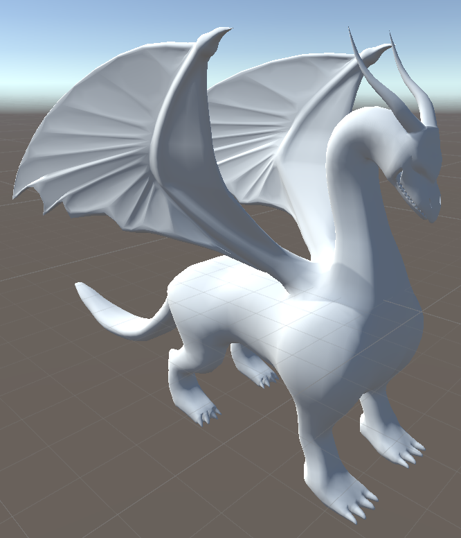
VoxelizeObject
VoxelizeObject acts as the main control method for the conversion process.
It begins by computing the model’s total spatial bounds via CalculateBounds, ensuring every visible mesh in the hierarchy is included.
It then determines the voxel grid’s resolution using CalculateArrayDimensions, allocates the 3D array, and calls FillVoxelGrid to populate it with occupancy data.
CalculateBounds
VoxelizeObject acts as the main control method for the conversion process. It begins by computing the model’s total spatial bounds via CalculateBounds, ensuring every visible mesh in the hierarchy is included. It then determines the voxel grid’s resolution using CalculateArrayDimensions, allocates the 3D array, and calls FillVoxelGrid to populate it with occupancy data.
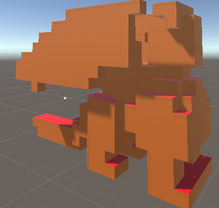
CalculateArrayDimensions
Once bounds are known, CalculateArrayDimensions determines how many voxels to create along each axis.
The two implementations differ in flexibility:
Cubic Version
Uses the model’s longest side to normalize voxel resolution. Each axis is scaled relative to that dimension, producing a uniformly cubic grid. The optional autoSize setting can automatically match the grid size to real-world object dimensions.
Dimension-Agnostic Version
Provides full per-axis control through several configuration options:
- autoSize – Automatically sets grid resolution based on the object’s physical bounds.
- scale and scaleFactor – Adjust voxel density when auto-sizing is active, scaling resolution up for finer detail or down for coarser sampling.
- matchBlockSize – Adjusts the voxel grid’s real-world proportions to match the block size defined in the World system. This ensures that, even with non-uniform voxel dimensions, the overall scale of the model remains consistent across all three axes.
In practice, the agnostic version’s configuration allows any imported model to align precisely with non-uniform voxel scales or custom-resolution environments.
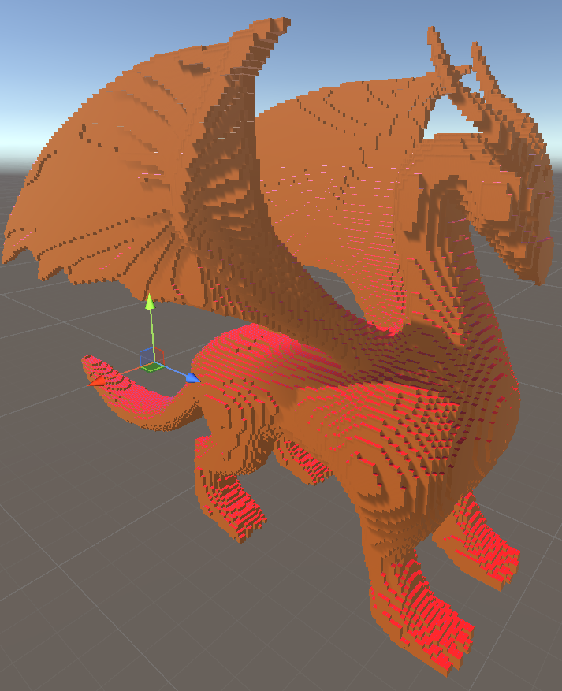
FillVoxelGrid
This method populates the 3D boolean array by scanning the model volume using physics-based checks.
For each voxel cell, a Physics.CheckBox query is performed at the voxel’s center using its half-size as a radius.
If the check intersects the model’s geometry, that cell is marked as occupied (true); otherwise, it remains empty (false).
The Cubic Version uses uniform voxel sizes, ideal for consistent block-based geometry.
The Dimension-Agnostic Version dynamically computes per-axis voxel dimensions from the model’s bounds, allowing accurate sampling even when voxel proportions differ along X, Y, and Z.
This process outputs a complete 3D boolean grid that can be passed directly to World.GenerateWorld(bool[,,]), where it is chunked, meshed, and rendered using the same optimized pipeline as procedural terrain.
FillSpaces
The FillSpaces class performs a reverse 3D flood fill — meaning it fills every enclosed space that the normal flood fill cannot reach. The goal is to solidify any internal cavities inside a voxelized model, creating a fully filled structure. This is particularly useful when generating assets in solid mode, allowing for destructible interiors, more coherent structures, and fewer wasted rendered faces.
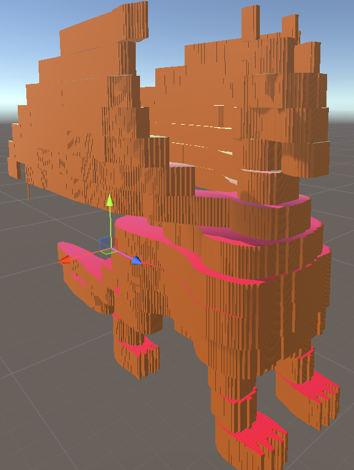
Bool3D
The process begins by scanning only the outer faces of the voxel grid rather than looping through every position in the array. From these faces, a flood fill is performed to mark all voxels that are connected to the exterior — essentially mapping every open, reachable area.
In most cases, the very first call to ReverseFloodFill handles nearly the entire workload by reaching every open space connected to the boundary. The subsequent passes mainly act as a safeguard against extremely rare cases — for example, small pockets of air that might be completely landlocked within other filled regions.
This reverse approach ensures that only unreachable areas are filled.
ReverseFloodFill
The ReverseFloodFill method handles the main flood fill logic using an explicit Stack<(int x, int y, int z)> to avoid recursion-based stack overflows. It starts at a given coordinate, checks whether that position is within bounds and not already filled or marked, and then pushes it onto the stack.
A while loop runs as long as there are entries in the stack, repeatedly popping one coordinate, checking all six of its neighbors, and using TryPush to add any unvisited air spaces back onto the stack. Each visited voxel is recorded in the doNotFill array to prevent duplicate pushes and infinite loops.
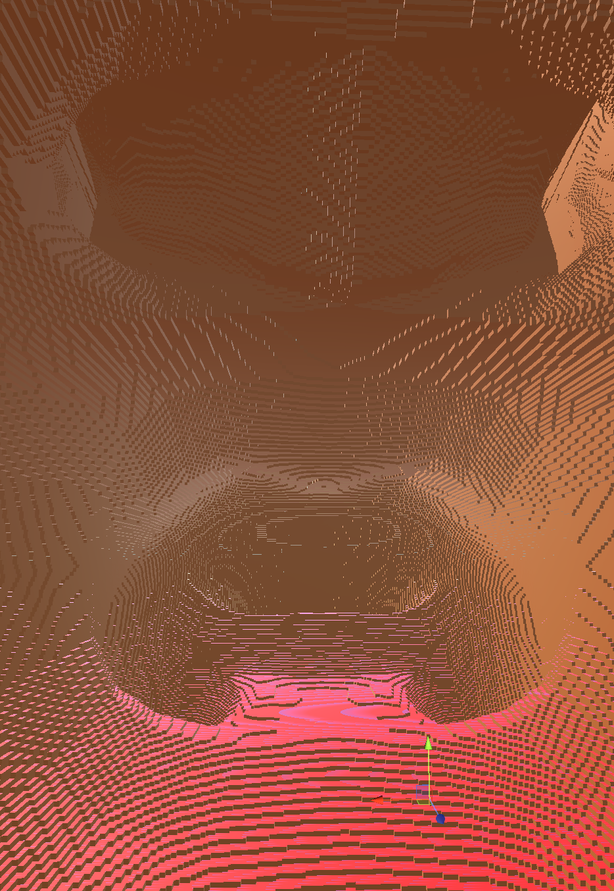
Final Fill Pass
Once the exterior-connected flood fill is complete, the system performs one final loop over the entire 3D array. Every cell that remains unmarked in doNotFill and empty (false) in the original data is now filled (true), ensuring all interior cavities are solid. The result is returned for mesh generation — producing a voxelized object that is both visually and structurally solid.
Final Product
After all systems come together, the result is a fully functional voxelization pipeline capable of converting any 3D model into a voxel-based version — both filled and unfilled, and at arbitrary scales.
From the outside, filled and unfilled models appear identical, but internally their structures differ. The filled version has its interior fully solidified using the reverse flood fill system, allowing for destructible geometry and optimized rendering. The unfilled version retains its hollow center, producing more lightweight meshes that can be generated faster when interior data isn’t needed.
The system also supports scaling, enabling voxelized versions of models ranging from a fraction of the original size to many times larger. This makes it possible to prototype small-scale structures or produce massive voxel environments with consistent geometry.
In later demonstrations, various dragon models were voxelized across a range of scales and block aspect ratios — from highly detailed miniatures to exaggerated forms with stretched voxel proportions.
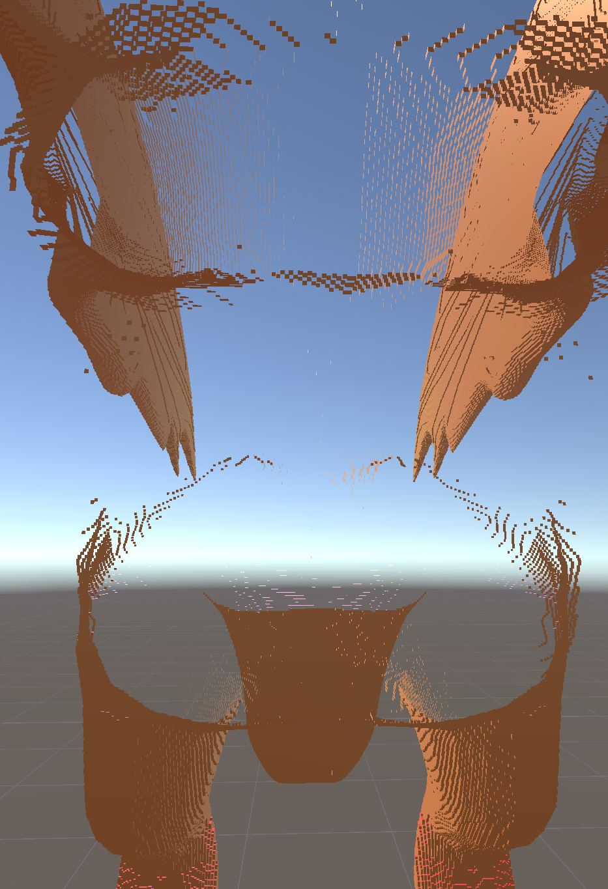
Saving Models
To make the generated voxel assets reusable, I created the SaveToPrefab tool — an editor-only utility designed to convert dynamically generated chunks into persistent prefab assets.
CreatePrefab
The core method, CreatePrefab, starts by initializing an empty parent GameObject that will represent the final prefab. It defines save paths based on user input, ensuring that both the prefab directory and a subfolder for individual mesh parts exist. It then iterates through all chunk GameObjects in the scene, collecting their MeshFilter components. Any chunk without geometry — identified by an empty vertex array — is skipped to prevent the creation of empty assets.
Each valid mesh is saved as a separate .asset file, ensuring that its data persists after exiting Play Mode. The script then removes the ChunkRenderer component from each chunk and parents the cleaned chunk under the prefab object. Once all parts are assembled, the prefab is saved to disk using Unity’s PrefabUtility.SaveAsPrefabAsset.
Finally, the temporary objects in the scene are destroyed, leaving behind a clean, organized prefab ready for reuse in any project or pipeline step.
This workflow bridges the gap between procedural generation and traditional asset creation — allowing any generated voxel structure, from small test objects to entire voxelized environments, to be preserved as a standard Unity asset.
Conway’s Game of Life
To explore generative systems beyond noise and model-based voxelization, I implemented a family of Conway’s Game of Life simulations adapted for both 2D and 3D voxel environments. These versions use the same World pipeline as the other generation systems, allowing them to directly produce optimized voxel meshes in real time.
Conway’s Game of Life is originally a simple life simulation where each cell in a 2D grid is either dead or alive. The original rules dictate that a living cell with more than three or fewer than two living neighbors dies, while a dead cell with exactly three neighbors comes to life. The result demonstrates how complexity can emerge from simple rules.
In my implementation, I both tweaked these rules—allowing custom ranges—and expanded the concept into three dimensions.
Structure
Base Class
Each variant extends an abstract GameOfLife base class that handles initialization, update timing, and communication with the World generator. The class defines shared parameters such as grid size, neighbor birth and death thresholds, and saturation (the probability of initial live cells). Different subclasses then override the pattern initialization and update logic to produce distinct behaviors.
It stores configurable ranges for birth and death conditions using Vector2Int, interpreted as inclusive minimum and maximum thresholds. During each cycle, the simulation checks every cell’s surrounding neighbors and applies the following rules:
- Birth: A dead cell becomes alive if the number of live neighbors falls within the birth range.
- Death: A live cell dies if the neighbor count falls outside the death range.
The PerformUpdate() method manages the simulation step, calling CustomUpdateState() in the active subclass before rendering the result through the World class. This modular setup allows each Game of Life version to control how states are represented and updated while keeping the rendering process consistent.
2D Game of Life
The GameOfLife2D variant operates on a two-dimensional boolean array. It alternates between two states (stateA and stateB) to prevent overwriting data mid-update, producing smooth generational transitions. The update logic follows classic Conway rules, with each cell checking its eight immediate neighbors. After every cycle, the resulting state is passed to world.GenerateWorld(), instantly visualizing the pattern as a voxel grid.
Perlin Game of Life
The GameOfLifePerlin class functions identically to the 2D version but uses float arrays instead of booleans. Any value greater than zero represents a living cell, and living cells take on their height from a moving Perlin noise pattern. This creates a dynamic wave effect that ripples across living cells, blending organic noise behavior with the deterministic structure of the Game of Life.
Survivor Game of Life
The GameOfLifeSurvivor class modifies the standard rules to introduce a variable strength system instead of binary life and death. Here, the grid is represented by a two-dimensional int array, where each cell’s value indicates its current strength.
If a cell meets the birth requirement, its value increases by one; if it meets the death requirement, it decreases by one. If neither condition is met, the value remains unchanged, just as in the traditional Game of Life.
This behavior creates a dynamic equilibrium where cells can strengthen, weaken, or hold steady depending on their surroundings. With the right range settings, the simulation produces clusters of pillar-like structures that appear to grow, collapse, and regrow in cycles — creating a sense of competing formations across the grid.
3D Game of Life
The GameOfLife3D version expands the concept into three dimensions, simulating organic shapes that grow, collapse, and merge over time. Like the 2D version, it alternates between two boolean grids to ensure consistency between updates.
To give creators more control, several initialization options define how the simulation begins:
- bottomFill / topFill: Randomly populates only the lowest or highest layer of voxels.
- diagonalsFill: Seeds voxels along a diagonal pattern through the grid.
- totalFill (default): Populates the entire volume randomly based on the saturation value.
Each step checks all 26 neighboring cells, applying the same birth and death rules as the 2D version. I’ve been able to generate stable, self-sustaining organisms that maintain their form over time, but finding parameter combinations that are also visually interesting has been more challenging. One particularly fascinating setup uses a birth range of exactly four and a death range covering all possible values. This creates a system where individual cells survive for only a single cycle, yet constant new births cause the pattern itself to keep evolving and expanding. The result is a flowing, ever-changing structure that grows outward until it eventually reaches the boundaries of the cube — a glimpse of what could become an endlessly developing organism in an unbounded space.